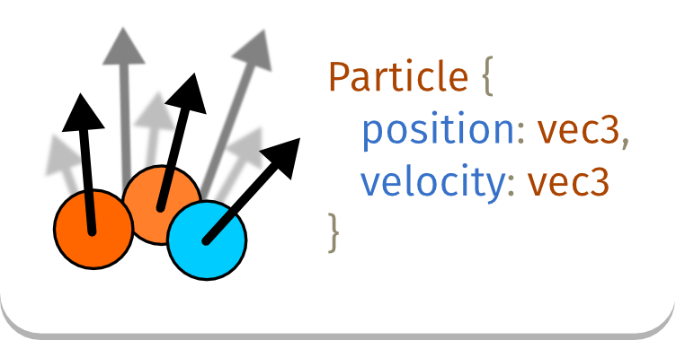
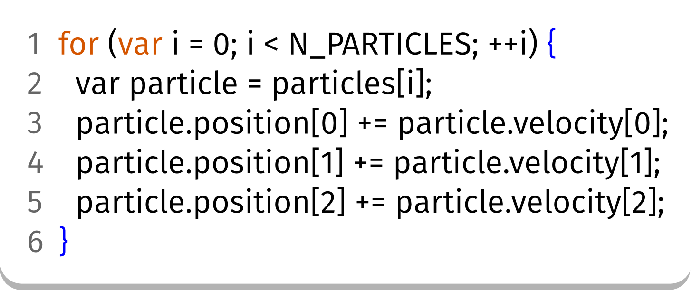
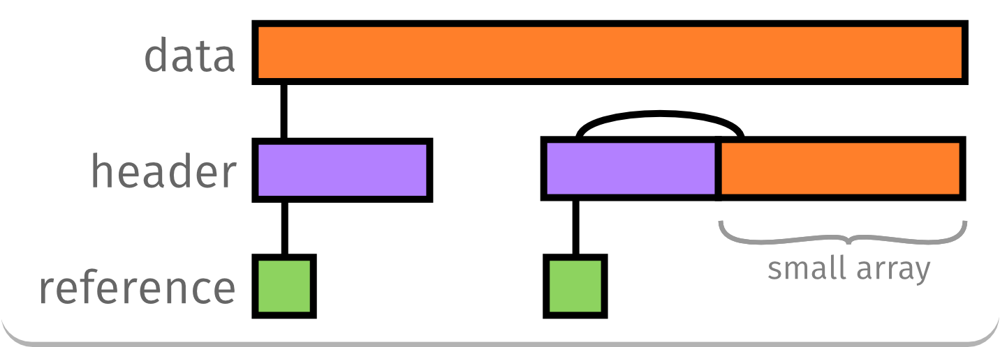
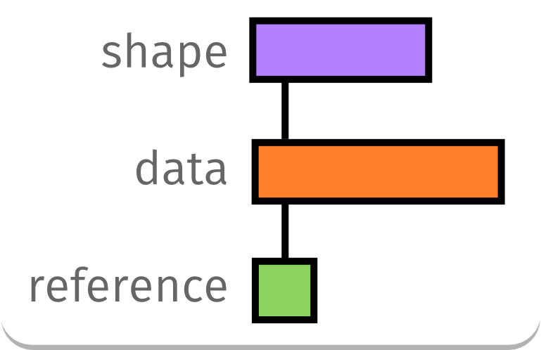
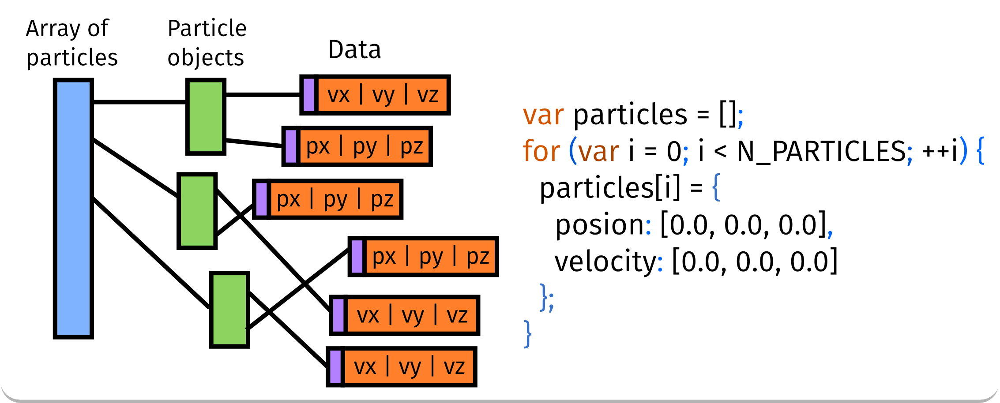
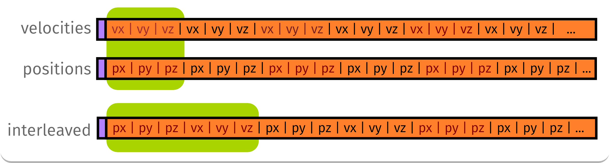
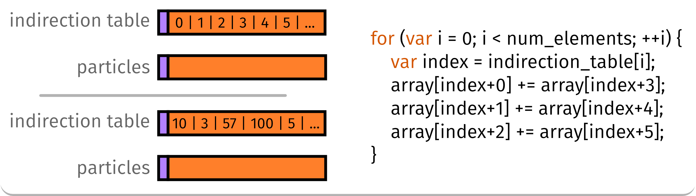
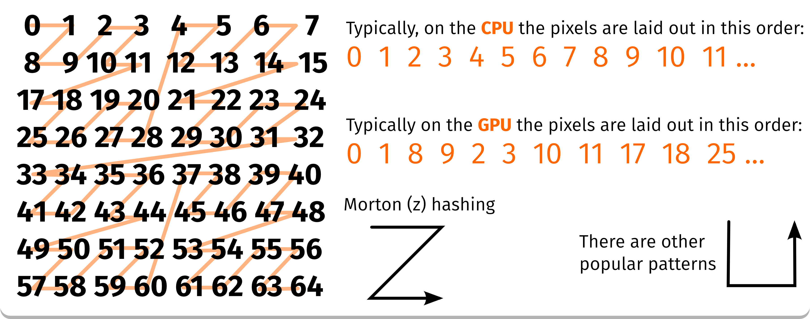
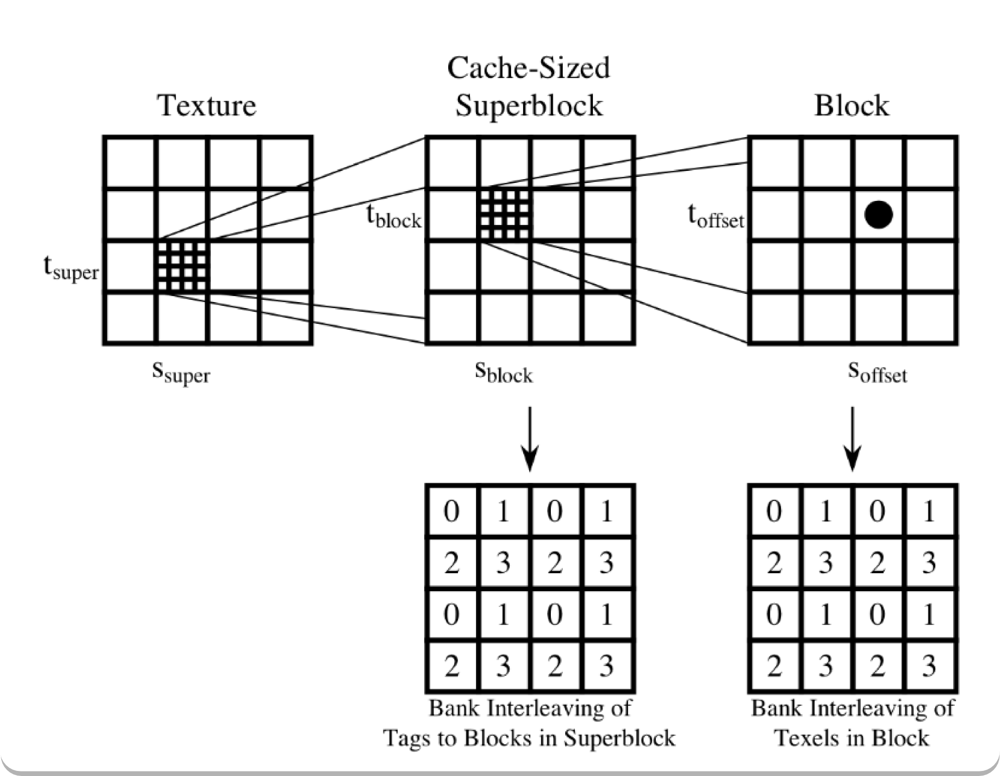
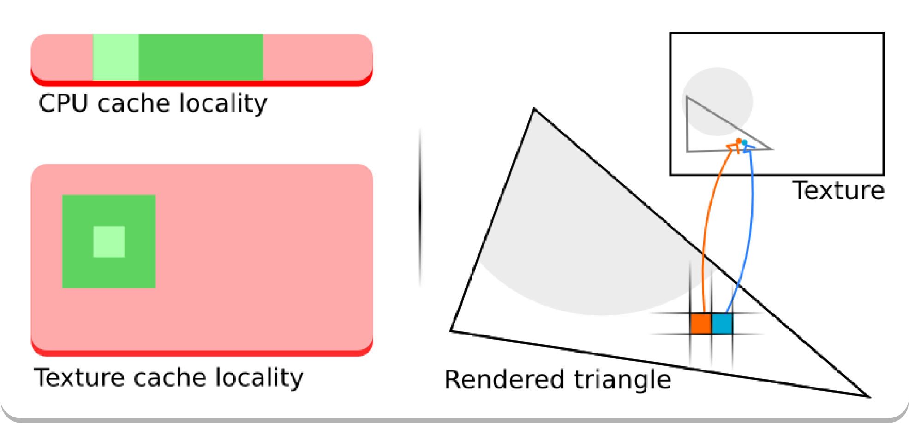

I am about to talk about stuff that doesn't usually matter to most programs
but typically becomes a big deal for some specific types of apps (graphics-heavy/interactive apps, games).
Don't fix what's not broken!
Let's add particles to our game

What's wrong here?

What's wrong here?
(A) lots of arithmetic operations
(B) JS is interpreted and therefore it is slow
(C) The memory access patterns
(D) The answer D
What's wrong here?
(A) lots of arithmetic operations
No! This is *really* cheap.
(B) JS is interpreted and therefore it is slow
No! This code is easy to optimize for the JIT
(C) The memory access patterns
Yes, This!
(D) The answer D
Accessing memory
it's slow.
Accessing memory
In JS, does it really matter?
Yes, for "processing" tasks like game physics or simulations
What about WebGL?
Yes, memory accesses = big deal for the GPU
How much control do I have over memory in JS?
Generally, not much
Typed arrays
Know your target platform (and be nice to the JIT)
Know your platform
Optimizing for performance is full of surprises
Most JS VMs have differences but aren't fundamentally different
JIT compilers
Type information
Under the VM, the same platform: the CPU.
Accessing memory - cpu cache
Be nice to the CPU cache
Memory is placed in the cache in "blocks".
CPUs are good at predicting regular access patterns, and prefetching data ahead of time.
Group the data that you access together.
Avoid random access, favor linear access.
JS Arrays in memory
Header pointing to a contiguous sequence of 64bit elements.
Sometimes small vectors (< ~12-16 elts) are inlined next to the header.
Typed arrays are somewhat similar (and typed \o/).

JS Objects in memory (JIT)
Structure containing a the members and a reference to the "shape".
The shape contains information such as the offset of members in the structure.

Back to our particles
Lots of data scattered around memory :(

Particles packed into arrays
No objects, just data.
Much faster than the previous slide.
Separated or interleaved? depends on what you do with the data.

A few things aout arrays
Prefer typed arrays over [] for large arrays
Currently, typed arrays are good for large amounts of data but not for smaller quantities (don't store many small xyz vectors in their own Float32Arrays).
Don't store different types in the same array
Access the elements sequentially, in order
To illustrate access patterns
Iterate over the indirection table to process particles.
The first table is sorted while the second is shuffled.
How much faster is the sorted table?

And WebGL?
Memory access matters a lot to the GPU
Thankfully, GPU rendering APIs are designed to avoid poor object-oriented data representation.
Vertex data is batched into buffers of contiguous memory.
Textures are Tiled and swizzled to maximize cache locality in 2D.
Texture memory swizzling
Done by the GPU/driver internally.
Texture samples are coherent in 2D, not just within rows.

Texture memory swizzling

Texture memory swizzling

Mip mapping
Precompute smaller versions of the texture.
Improves the likelyhood that neighboring on screen pixels will fetch from neighboring texels.
More of the texture fits in the cache for small/far objects.
Vertex buffer objects
The way vertices are packed into VBOs affect performance the same way it affects performance on the CPU.
The GPU can cache the result of the vertex shader and avoid recomputing an index that comes several times if the result is still in the cache.
Prefer grouping vertex attributes into the same vbo.
Keep attributes that change often (if any) in a separate vbo.
Shaders
Don't forget that they run a LOT of times per frame!
It's great when the entire shader fits in the instruction cache.
Otherwise, loads of cache-misses as the shader is run many times.
a few closing notes
As JIT compilers improve and the generated code becomes closer to what one can write in C++, cache effects will become more and more important.
Currently there is still some VM overhead which hides cache latency in some cases.
Moving garbage collectors have the potential to automatically keep hot data together, to some extent.